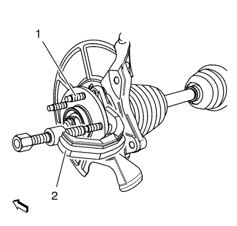
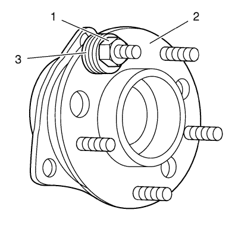

Sustitución de los espárragos de rueda
Herramientas especiales
CH-43631 Extractor de rótulas
Si desea informarse sobre herramientas regionales equivalentes, consultar Herramientas especiales .
Procedimiento de desmontaje
- Elevar el vehículo y soportarlo de manera adecuada. Consultar Elevación y soporte en alto del vehículo .
- Desmonte la rueda del vehículo. Consultar Desmontaje y montaje de la rueda y el neumático .
- Retire y sujete la pinza de freno y el soporte como un conjunto y desmonte el rotor de freno. Consultar Sustitución del rotor de freno delantero .
- Gire el cubo de cojinete hasta una posición donde haya la menor interferencia entre el espárrago y la mangueta.

Atención: Sujete las pinzas de freno con alambre mecánico fuerte o equivalente cuando se separen del montaje y aún esté conectado el tubo flexible de freno hidráulico. Si no se sujetan las pinzas de esta manera, el tubo flexible de freno tendrá que soportar el peso de las pinzas, lo que puede provocar que se dañe el tubo flexible de freno y esto, a su vez, puede provocar una fuga de líquido de frenos.
- Utilice la herramienta de desmontaje CH-43631 (2) para liberar el espárrago de rueda (1) del cubo de cojinete y deseche el espárrago (1).
Procedimiento de montaje

- Monte un NUEVO espárrago en el conjunto cojinete/cubo (2). Colocar suficientes arandelas (3) para facilitar la inserción del espárrago en el cubo.
- Monte y apriete una tuerca de rueda (1) hasta que la cabeza del espárrago esté totalmente asentada en la parte trasera de la brida del cojinete/cubo (2).
- Retirar la tuerca de rueda (1) y las arandelas (3).
- Monte el rotor de freno e instale la pinza y el soporte como un conjunto. Consultar Sustitución del rotor de freno delantero .
- Monte el conjunto de neumático y llanta. Consultar Desmontaje y montaje de la rueda y el neumático .
- Bajar el vehículo.
| © Copyright Chevrolet. Reservados todos los derechos |